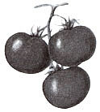
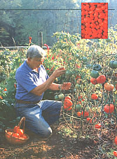
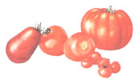
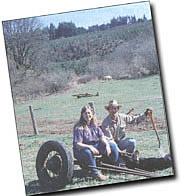
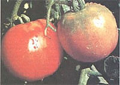

America's earliest settlers thought they were poisonous. Jeff Taylor bravely debunks that rumor and provides a guided tour to the best vegetable of the season
Let me say at the outset that my wife is the better gardener, qua gardener. Joy understands the magic interaction of soil, seeds, and sun. Her thumb is a bright cucumber green. But as a nongardening amateur, I read the literature to keep up with all the newest trends in home gardening. We have different approaches to it, that's all. Different ideas.
Joy stops weeding. "Let me get clear on this: You want to put some rusty junk in our flower garden?"
"It's the newest trend," I tell her. "The garden as art. Visual and tactile intermixing of artifacts with biogenic life." A garden should interest the eye and relax the soul. We've got wind chimes on that tree already, and there's a brass watering can, a new birdhouse, the tin scarecrow, our shrine in the corner, and my trusty double-wide hammock, all placed for art's sake. Now I'm thinking the flowers could use a spot of rustic accent, specifically the old trailer frame out back of the barn, its wire spokes proving that it used to be one of the first American cars. Noble in workmanship, original in statement, a mute testimony to the impermanence of the works of mankind compared to the annual gardens of earth; decades of weather have rusted the axle tree to a fine patina ....
However, the thought balloon above Joy's head shows a blemish of auto salvage in the middle of her pristine garden. "No way," she exclaims. "The basic idea's good, but let's find something smaller. If you like, we can put the trailer out in your tomato patch." I reel in shock and stagger back. What? Instant veto to that. My tomato patch is a scientific proving ground. No room for beauty there.
Art is an uphill battle. Being an artist herself, Joy defines the term along odd lines of personal choice when it comes to her garden, and I have to validate her artistic vision in these matters, or else sleep on the couch. Differences of opinion provide a healthy contrapuntal balance in a marriage. We differ more than somewhat in our choice of favorite garden vegetables, for instance. She says potatoes, I say tomatoes, she says asparagus, I still say tomatoes; in fact, I say tomatoes should be the primary fruit raised in our garden, with all other vegetables subordinate to the light, space, and nutrient needs of this lovely, fecund plant.
Joy demurs. She opines that onions, spinach, potatoes, garlic, dill, squash, pumpkins, peas, beans, eggplant, spinach, corn, melons, spinach, broccoli, lettuce, cabbage, and about seventy other kinds of spinach are equally important to a balanced diet and garden. But I suspect that the source of her boredom with tomatoes is based on their simplicity of cultivation. She freely admits that tomatoes are no challenge to grow in just about any climate, if one selects the right variety and follows basic rules of cultivation. Furthermore, she says, tomatoes produce in such abundance that other veggies wind up in the rear of the canning lineup or the top of the freezer at harvest time. (Like turnips? Like spinach? Good.) It's easy to grow great tomatoes, Joy insists, and not just big green ones, either. Looking right at me, she swears anyone can raise better fruits than the pale, pinkish, insipid, bouncy baseballs sold in the supermarket.
She's right. Anyone can grow good tomatoes, even people who don't like or trust tomatoes. The early settlers of America thought they were poisonous; they also believed that fresh air, sunshine, and regular baths were harmful to mind and body. Sinfully red, orgiastically juicy, and a relative of deadly nightshade, tomatoes grew like a weed in the fertile soil of the New World, their dew-dappled fruit tempting the ungodly, and seemingly too good to be true. People of that age were puckered up pretty tight, but eventually a politician ate one in public; a good way to test them in case they had been poisonous. He didn't die right away, so our forebears grudgingly began to nibble tomatoes. Hard to believe the main ingredient in pizza, salsa, tomato soup, and spaghetti was ever suspected of being anything but delicious, but that's history for you.
The first step in growing Lycopersicon esculentum is finding out exactly what climate you live in, so you can select varieties that will thrive. Think of tomatoes as a tropical plant. They love heat, but it's not that simple; a tomato type that does well in the warm nights of the Eastern United States may do poorly when planted in the relatively mild maritime climate of the Oregon coastal mountains or even the arid high deserts of Arizona. In fact, some tomato varieties that flourish anywhere in our little valley will just give up and freeze when planted on mountainside farms within sight of our house. Your local Soil Conservation Office or county extension agent can tell you about microclimates the slight but horticulturally important variations of daytime and nighttime temperatures that can occur in otherwise similar areas.
While you're at it, ask the above extension agents and your gardening neighbors about the soil in your region. It's an expense to have it tested, but it may be worth it. Tomatoes like a pH range between six and seven, with lots of calcium to prevent blossom-end rot and enough magnesium to build chlorophyll. Soil with deficient minerals literally may need a dose of Epsom salts: a handful in a watering can poured over the young plants when you transplant them into the soil. On the plus side, Epsom salts correct magnesium deficiencies overnight, and you'll get whumping big tomatoes a bit earlier; Epsom salts are a relatively pure soluble form of magnesium sulfate. But it's still a chemical fertilizer, and can lead to a buildup of toxic salts in your garden. You may want to use organic soil-builders instead, like dolomite, manure (not too much - excess nitrogen is great for leaves, but you won't get much fruit), kelp, bonemeal, sifted wood ash, oyster shells, eggshells, and fish meal, letting Nature do its thing. It's your garden, after all. And your spouse's, of course. (See page 52 for a complete guide to sod nutrition.)
I love tomatoes. If I didn't, I would have hated the work involved in learning the difference between determinate and indeterminate varieties. All those dictionary words in the science of horticulture put me to sleep, but tomatoes are worth waking up for, so here's what I've learned: Determinate tomatoes grow on bushes, spend all their time making fruit, mature earlier, and give you a ton of tomatoes overnight. Some gardeners say the flavor isn't as good as nondeterminate tomatoes, which grow on vines and produce all summer long, right up until the first frost nails them. But the bush tomatoes are ideally suited to the climate in the maritime Northwest, so we're stuck. You may not be.
As long as we're learning new and difficult words, how about parthenocarpic? It seems to mean "virgin fruit" in Greek, but in English it signifies a plant whose early fruit has undeveloped seeds. Parthenocarpic varieties do well in this region, probably because they set early fruit with undeveloped seeds in our colder nights; tomatoes with viable seed are produced only after it gets warm. (Obviously, you can eat tomatoes before and after the seeds become viable. Your tongue won't care.)
I think it's wise to plant lots of determinate and indeterminate tomato varieties, no matter where you live. In a season or two, you'll know which ones consistently produce in your garden, and you can save the seeds of the best plants. Don't listen to your spinach-loving spouse; plant more than you think you'll need. Think bounty. That way, you can have fresh cherry tomatoes, sandwich tomatoes, and salad tomatoes all summer long, and at summer's end, when your garden runs into the wall of frost, pop all the green tomatoes in the canner. Trust me, you'll have enough sauce and salsa to last until next February.
When the sun rises, I go to work
When the sun goes down, I take the rest,
I dig the well from which I drink,
I farm the soil that yields my food,
I share creation, Kings can do no more.
- Ancient Chinese 2500 B.C.
Let's talk about seeds. With the exception of greenhouse varieties, commercial tomatoes are determinates. Commercial growers look for appearance, size, and uniformity, with tough skins for machine harvesting and hard flesh to survive shipping and storage; flavor and texture are casualties of the process. Someday, you may want custom tomato seeds that you have crossbred yourself for better flavor, early ripening, and resistance to disease or frost. To give you an idea how easily anyone can do it, I learned how, from a book called Breed Your Own Vegetable Varieties (Little, Brown and Company, 1993) by Carol Deppe. Tailoring your own gene pool gives you the best tomatoes you can grow.
Until you start breeding your own varieties and saving the seeds from tomatoes that did well in your garden, begin with commercial strains that have proven themselves in other home gardens: Fantastic, Big Boy, Sweet 100, Bonny Best, Roma VF, Big Girls, Brandywine, Kootenai, Better Boys, Presto, Pik Red, Santiam, and Oregon Spring are a few of the hundreds of varieties and types of tomato I've either eaten or grown over the years.
Wait, you say. How do you know any of the above tomatoes will thrive in your particular area? The nearest county extension agent can tell you, and the seed catalogs will make suggestions, and nurseries will know a lot; but if you have a gardener's club in your area, by all means, join. Experienced members can tell you more about growing tomatoes in your locale than you'll ever need to know.
Let's get down to the meat of the matter. If you start with seeds, germinate them on a sunny window sill about two months before the last frost. Don't let them get hotter than 70°F. If you have a greenhouse, cold frames, or cloches, things will be considerably easier, because you can't transplant your seedlings outdoors until the soil is good and warm, about 60°F. (If you don't have a greenhouse, you'll have lots of green tomatoes, because they'll start late and therefore mature late.) Plant them in fiats about an inch apart, one quarter-inch deep in sterilized soil mixed with vermiculite or perlite. When the second set of leaves appear, put them in individual small pots. Every two weeks, repot them deeply in larger pots with just the top leaves showing. The stem will send out more roots and you'll get a large, established root ball. Coffee cans work well for the final, fourth potting. Give your plants lots of sunshine now, but back off on the watering. A few days before you're ready to plant them in the garden, stop watering altogether; that encourages your seedlings to seek out ground water on their own.
This is the planning stage, so make your preparations now. Locate the sunniest spot in your garden for the tomatoes, especially any place you've had old compost piles. If you're going to stake your indeterminate (vine) tomatoes, get the stakes in now, before transplanting. You can also use a trellis, cages, or wire fence. ("How about an old trailer?" Joy suggests. Hmm.) But many gardeners report that letting the vines sprawl on a mulch of hay keeps them close to the warm Earth, which makes for more ripe fruit. It's your call. If you're going to stake, plant the seedlings about two feet apart; if not, double that spacing.
Keep broccoli, potatoes, and cabbage on the other side of your garden, because here comes another thumping word to learn: allelopathic. It refers to harmful reactions between plants. A nearby black walnut tree, for instance, will do your tomatoes no good; broccoli may stunt your plants, and tomato plants supposedly release a toxin that inhibits cabbages.
No occupation is so delightful to me as the culture of the earth. Such a variety of subjects, some one always coming to perfection, the failure of one thing repaired by the success of another...
- Thomas Jefferson, Letter to Charles E. Peale 1811
On the other hand, tomatoes are beneficial to roses and protect asparagus from the asparagus beetle. Plant lots of African marigolds all around tomatoes, by all means, to kill off root-sucking nematodes (which are vicious microscopic worms, like tiny rattlesnakes), and be advised that garlic will protect tomatoes from spider mites if you plant it close by. Note: garlic doesn't like peas or beans. Learn all you can about companion planting, even though you may hear conflicting reports from the men and women of science. We are relearning forgotten folk wisdom, folks, and there is now laboratory proof that companion planting isn't just superstition, which gardeners have known for thousands of years. Give them the grants, Washington.
Tomatoes need heat. We live in a south-facing valley where the soil warms quickly, but many gardeners mulch their tomatoes with black plastic to get that all-important early start. If it's a warm, overcast day, grab the chance to plant your tomatoes. Dig the holes nice and deep, because tomatoes are deep-rooted plants, and fill the bottom with compost. Side-dress them with more compost.
From here on out, water them deeply, seldom, and carefully. I use a watering can, not a hose; if water splashes on the undersides of the leaves, it can promote leaf blight. Once the plants are established, they'll need about an inch a week of water per plant. Protect them from late frosts with lots of mulch and even plastic covers made from milk or soft-drink bottles. And prepare to kill some bugs. Think Merciless.
You'll recognize the tomato hornworm by its green body with white stripes and by its size, three to four inches long. Manually waste him. Make cardboard collars out of those cylinders inside holiday wrapping paper, and you'll keep the cutworms off. Kill any you see. Spider mites and flea beetles can be discouraged by wood ashes, garlic and red pepper sprays, companion planting, and personal hatred. Don't get clever and make up a tobacco solution, even though that kills nearly every bug around; tomatoes and tobacco are related, and will share the mosaic virus. The result is diseased tomatoes.
Slugs and snails can be controlled organically by filling your entire garden with beer to a depth of six inches, and stocking this brewski lake with ducks who have taken a vow not to eat your vegetables or beneficial insects. I've never tried this method, but I'm sure it works. Flamethrowers and perimeter highways of salt will also keep them at a distance, but at considerable cost. Other than that, pick the little sticky trespassers by hand and murder them.
Some people pinch off the sucker blossoms, and some don't. It's hard to say if you should prune and pinch indeterminate tomatoes, because the debate is still underway with various factions calling the others wrong. Pruning may give you slightly earlier ripe tomatoes, perhaps bigger fruit; but left alone, the suckers will produce fruit, too, and I think the tomatoes prefer to be left alone and not dismembered. Have a heart.
The summer days pass in an orgy of work, weeding all the vegetables that are healthy and good for you; your indeterminate tomatoes are giving you a peck a day, just enough to eat and share. But the determinate bushes are getting ripe and ready, as harvest looms. The first light frost is your wake-up call; cover the tomatoes with straw mulch and catch up on sleep. Before the next frost though, you'll want to pick all of the tomatoes in your patch, put the green ones on the same sunny window sill you used to germinate the seedlings, clean out the freezer, and get your canner down from the shelf. The marathon begins: Now you can can and can and can the best tomatoes in the world, or freeze them if you don't mind losing a little flavor. Don't store them in a refrigerator, however, because they'll start to deteriorate right away. (Supermarket tomatoes are usually refrigerated at some point before you buy them, but you can't hurt or improve the taste of cardboard.) Sixty degrees is about right for keeping them until you can put them up.
To save the seeds, put tomatoes through a food processor, add an equal amount of water and let it stand in a jar for two or three days. Stir, and the seeds will fall to the bottom of the jar. Rinse and dry on a clean surface; the same sunny window sill will work. Let them really dry out, up to a month is standard. By the way, you can't save hybrid seed, because they won't breed true.
I'm looking forward to harvest time. Tomatoes cluster thickly around the old trailer, as the iron frame gathers heat all day and radiates it out to them all night. Joy really has some pretty good ideas, for a gardener.
|
Jeff and Joy in a quiet moment before a round of garden chores. |
 Jeff's decorative trailer frame is still looking for a good home. |
 |
|
|
 |
 |
|
 |
|
|